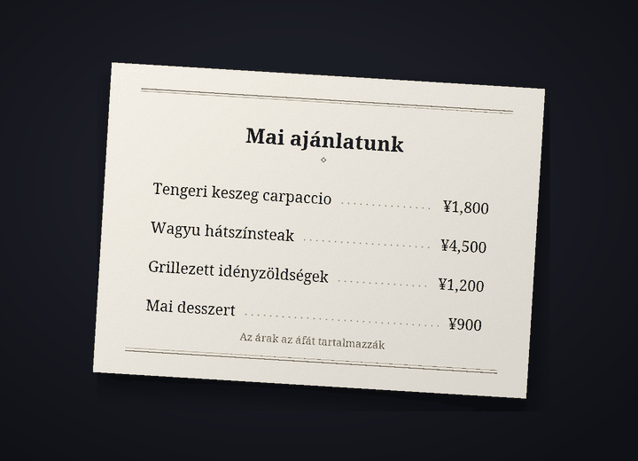

Fordítóbot Discord-csevegéshez
Beszélgess a saját nyelveden a Discordon
A Cozirom egy Discord-bot, amely a másik fél nyelvére fordítja a csevegést. Ha bekapcsolod, az üzeneteid lefordítva, a saját neveddel és profilképeddel jelennek meg, és a képeken lévő szöveget is lefordítja.
Így kezdheted elCsomagok megtekintése
A fordításokat AI (az Anthropic Claude-ja) készíti. Tévedhet, ezért fontos dolgoknál nézd meg az eredetit is.
Mire képes
Egyetlen bot fordít szöveget, képet és hangot
A csomagok keretét fordításban mérjük. Egy üzenet egy nyelvre fordítva 1 fordítás.
6 funkció
Fordításban
Automatikus fordítás
Futtasd egyszer ezt:
/fordítás be, és azon a szerveren az üzeneteid a másik nyelven jelennek meg, a saját neveddel és profilképeddel. Az eredeti apró betűvel a fordítás alatt marad, a teljes eredetit pedig az üzenet alatti gomb mutatja meg.
gomb mutatja meg.FordításÜzenetenként 1
Szöveg a képeken
Étlapok, játékképernyők, mémek: ha egy képen szöveg van, a bot beolvassa és lefordítja. Megnyithatod az automatikus fordítást bekapcsolók képei alatti
 ikonnal vagy jobb klikkes fordítással. Az eredményt csak a kérő látja, és a szöveg nélküli képek nem számítanak bele.
ikonnal vagy jobb klikkes fordítással. Az eredményt csak a kérő látja, és a szöveg nélküli képek nem számítanak bele.FordításKépenként általában kb. 9
Fordítás a képen
A
 ikonnal olyan másolatot kapsz a képről, amelyről az eredeti szöveg eltűnt, és a helyére a fordítás került. Kezdetben „Az eredeti szerint” van kiválasztva, amely az eredeti betűkhöz közeli betűtípust ad, és legfeljebb 15 betűtípuscsomag között válthatsz, például „Talpas”, „Kézírás” vagy „Képregény”; a csere nem számít bele a keretbe. Leginkább vízszintes szövegnél válik be, például képernyőképeken, mémeken, játékképernyőkön és étlapokon, és az eredményt csak az látja, aki megnyomta.
ikonnal olyan másolatot kapsz a képről, amelyről az eredeti szöveg eltűnt, és a helyére a fordítás került. Kezdetben „Az eredeti szerint” van kiválasztva, amely az eredeti betűkhöz közeli betűtípust ad, és legfeljebb 15 betűtípuscsomag között válthatsz, például „Talpas”, „Kézírás” vagy „Képregény”; a csere nem számít bele a keretbe. Leginkább vízszintes szövegnél válik be, például képernyőképeken, mémeken, játékképernyőkön és étlapokon, és az eredményt csak az látja, aki megnyomta.FordításKépenként általában kb. 19


Példa: az eredeti fotó (egy japán étlap), és ugyanaz a fotó, amelyről a szöveget eltávolítottuk, a helyére pedig „Talpas” betűtípussal a magyar fordítást írtuk. Hangüzenetek
Kattints jobb gombbal egy telefonos alkalmazásból küldött hangüzenetre, és megkapod, mi hangzott el, valamint a fordítását. Legfeljebb 3 perces üzeneteket írunk át, a beszéd nélküli üzeneteket pedig nem számoljuk.
FordításMásodpercenként 1, plusz a fordításEgy 10 másodperces üzenet általában 11
Négy hangnem
Szleng, közvetlen, barátságos vagy hivatalos, szerverenként választva. A barátokkal közvetlenül, új helyen hivatalosan. A Guest (ingyenes) csomagban az első 14 napban mind a négyet használhatod, utána a barátságos hangnemet.
FordításFizetős: mind a négy. Free: az első 14 nap
31 nyelv
A bot 31 nyelven fordít. Képernyői és parancsnevei 30 Discord-nyelven érhetők el, így a másik fél is a saját nyelvén állíthatja be.
Fordítás31 fordítási, 30 megjelenítési nyelv

Az első lépések
Három lépés, és a fordítás a neveddel jelenik meg
Add hozzá a botot a szerverhez
A szerver adminisztrátora hozzáadja a botot a szerverhez. A meghívó linket itt kérheted el: támogatási szerver.
Kapcsold be a fordítást
Aki szeretné, hogy az üzeneteit fordítsák, futtassa azon a szerveren:
/fordítás be. A bot kitalálja a te nyelvedet és a másik félét, és megnyitja a beállítási panelt. Ha nem stimmelnek, módosítsd őket a legördülő menükben.Írj úgy, mint máskor
Írj ugyanúgy, mint máskor, és a fordítás a neveddel jelenik meg. Kezdd a Guest (ingyenes) csomaggal, és ha többre van szükséged, válts csomagot a csomagoldalon.
Adatvédelem
A lefordítandó üzeneteket és a képeket csak az Anthropicnak (USA), a hangüzenetek hangját pedig csak a Google-nek (USA) küldjük el. A bot a közzétett fordítások eredetijét 14 napig, a gyorsítótárazott fordításokat 30 napig őrzi meg, a képeket, a hangot és a belőlük kiolvasott szöveget pedig nem tárolja. A csevegések tartalma soha nem kerül naplóba, és ezzel a paranccsal bármikor törölheted az adataidat: /fordítás adattörlés.